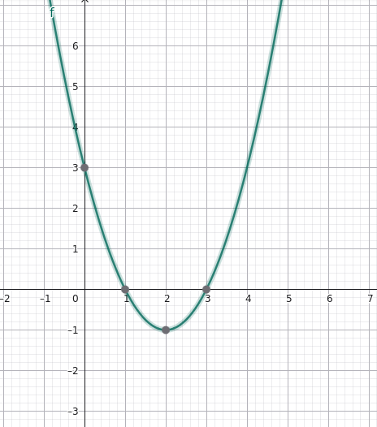
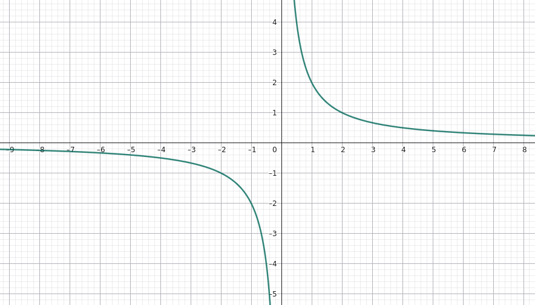
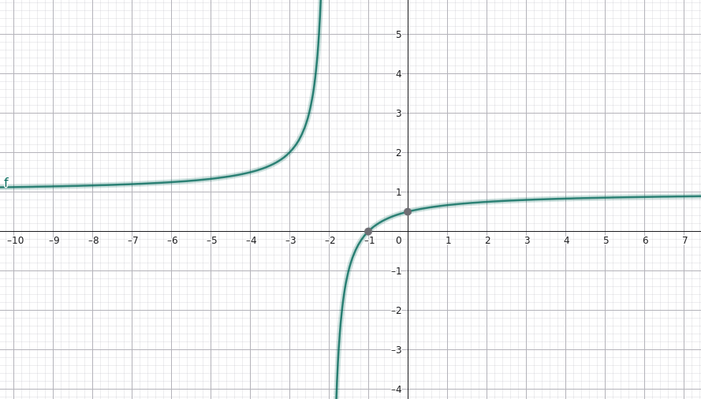
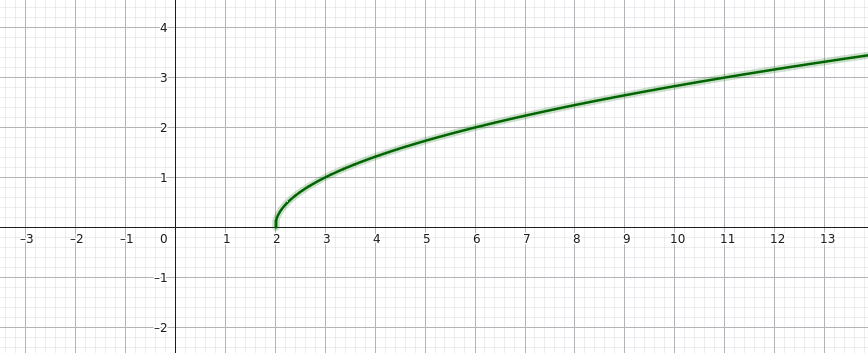
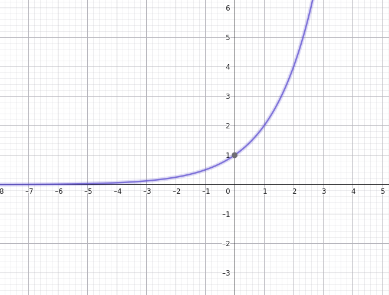
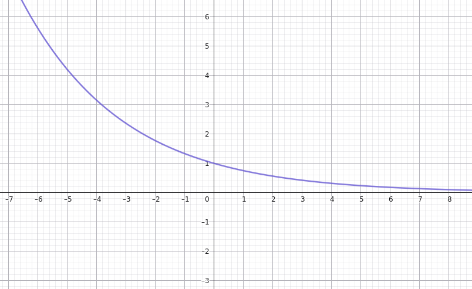
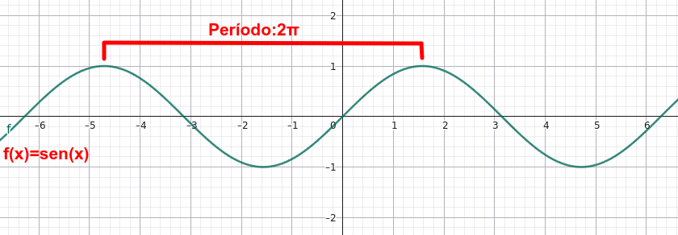
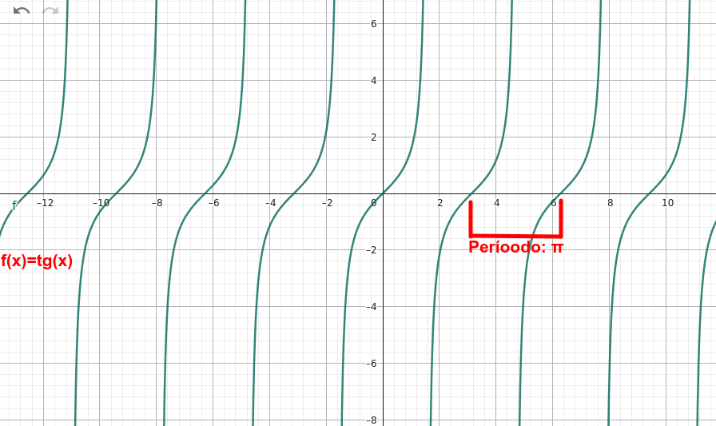
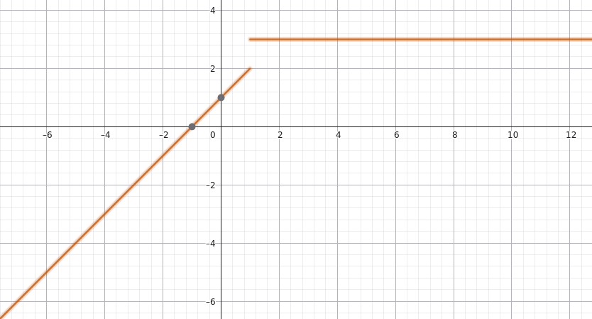

Funciones polinómicas
Una función polinómica tiene la expresión:
\( f(x)=a_nx^n+a_{n-1}x^{n-1}+\cdots+a_1x+a_0 \)
Sus coeficientes son números reales y sus exponentes son enteros no negativos.
Las principales son:
- Constantes: \(f(x)=k\).
- Afines: \(f(x)=mx+n\).
- Cuadráticas (o parabólicas): \(f(x)=ax^2+bx+c\).
- Cúbicas: \(f(x)=ax^3+bx^2+cx+d\)
- De grado superior: \(f(x)=x^4\), \(f(x)=x^5\), etc.
Ejemplos:
- Función constante (sólo término independiente): \( f(x) = 3 \)
- Función afín (polinomio de grado 1): \( f(x) = 2x+1 \)
- Función cuadrática o parabólica (polinomio de grado 2): \( f(x)= 6x^2+x+4\)
- Función cúbica (polinomio de grado 3): \( f(x)=x^3+x^2-5x-1 \)
Propiedades generales
| Característica | Propiedad |
| Dominio | \(\mathbb R\) |
| Recorrido | Depende del polinomio. Si el grado es impar: \(\mathbb R\). |
| Cortes con X | Raíces reales del polinomio. |
| Corte con Y | \((0,f(0))\) |
| Continuidad | Continua en \(\mathbb R\). |
| Crecimiento y decrecimiento | Dependen de la expresión. |
| Máximos y mínimos | Pueden existir; dependen de la gráfica. A lo sumo hay tantos como \(n-1\), donde \(n\) es el grado del polinomio, pero puede haber menos. |
| Simetría | Puede ser par, impar o ninguna. |
| Periodicidad | No periódica si no es constante. |
| Inversa | Existe si es inyectiva. |
| TVM | Se calcula con la fórmula general. |
Caso particular: función afín
Para:
\(f(x)=mx+n\)
con \(m\neq0\) sus principales características son:
- Dominio y recorrido: \(\mathbb R\).
- Corte con X: \((-n/m,0)\).
- Corte con Y: \((0,n)\).
- Si \(m>0\), es creciente; si \(m<0\), decreciente.
- No tiene máximos ni mínimos absolutos.
- No es periódica.
- Es invertible, con \(f^{-1}(x)=(x-n)/m\).
- Su TVM es \(m\).
Caso particular: función cuadrática
Para:
\( f(x)=ax^2+bx+c,\qquad a\neq0 \)
con \(a\neq0\) sus principales características son:
- Dominio: \(\mathbb R\).
- Corte con Y: \((0,c)\).
- Cortes con X: soluciones de \(ax^2+bx+c=0\).
\[ x=\dfrac{-b\pm\sqrt{b^2-4ac}}{2a} \]
- Vértice:
\( x_v=-\dfrac{b}{2a},\qquad y_v=f(x_v) \)
- Máximos y mínimos (extremos):
- Si \(a>0\), tiene un mínimo absoluto en el vértice.
- Si \(a<0\), tiene un máximo absoluto en el vértice.
- Si \(a>0\), tiene un mínimo absoluto en el vértice.
- Su eje de simetría es \(x=x_v\).
- No es periódica.
- No es invertible en todo \(\mathbb R\), aunque puede serlo al restringir el dominio.
- Su TVM entre \(u\) y \(v\) es \(a(u+v)+b\).
Ejemplo resuelto: función cuadrática
Estudiamos:
\( \boxed{f(x)=x^2-4x+3} \)
1. Dominio
Es un polinomio, por tanto:
\( D_f=\mathbb R \)
2. Recorrido
Calculamos el vértice:
\( x_v=-\dfrac{-4}{2}=2 \)
\( y_v=f(2)=4-8+3=-1 \)
Como el coeficiente de \(x^2\) es positivo, la parábola se abre hacia arriba. Por tanto:
\( \operatorname{Rec}(f)=[-1,+\infty) \)
3. Cortes con los ejes
Eje Y:
\( f(0)=3 \)
Punto: \((0,3)\).
Eje X:
\( x^2-4x+3=0 \)
\( (x-1)(x-3)=0 \])
Puntos: \((1,0)\) y \((3,0)\).
4. Continuidad
Es continua en todo \(\mathbb R\).
5. Crecimiento y decrecimiento
Decrece hasta \(x=2\) y crece a partir de \(x=2\).
6. Máximos y mínimos
Tiene un mínimo absoluto de valor \(-1\), alcanzado en \(x=2\). No tiene máximo absoluto.
7. Simetría
Su eje de simetría es:
\( x=2 \)
No es par ni impar respecto del eje Y o del origen.
8. Periodicidad
No es periódica.
9. Función inversa
No tiene inversa en todo \(\mathbb R\). Si restringimos el dominio a \([2,+\infty)\), obtenemos:
\( y=(x-2)^2-1 \)
Despejando la inversa:
\( \boxed{f^{-1}(x)=2+\sqrt{x+1}} \)
Su dominio es \([-1,+\infty)\).
10. TVM entre \(x=0\) y \(x=2\)
\( \operatorname{TVM} =\frac{f(2)-f(0)}{2-0} =\frac{-1-3}{2}=-2 \)
La tasa de variación media es \(-2\).
11. Representación gráfica

Funciones racionales
Son funciones expresadas como cociente de polinomios:
\( f(x)=\dfrac{P(x)}{Q(x)} \)
con \(Q(x)\neq0\).
Una función racional especialmente importante es la de proporcionalidad inversa:
\( \boxed{f(x)=\dfrac{k}{x},\qquad k\neq0} \)
Propiedades generales de \(f(x)=k/x\)
| Característica | Propiedad |
| Dominio | \(\mathbb R\setminus\{0\}\) |
| Recorrido | \(\mathbb R\setminus\{0\}\) |
| Cortes con X e Y | Ninguno. (Salvo que se empiecen a sumar constantes a la función o a la variable \(x\)). |
| Continuidad | Continua a cada lado de \(x=0\) |
| Monotonía | Si \(k>0\), decreciente en cada intervalo; si \(k<0\), creciente. |
| Máximos y mínimos | No tiene extremos absolutos. |
| Simetría | Impar |
| Periodicidad | No periódica |
| Inversa | Es su propia inversa |
| TVM | \(-k/(uv)\), entre \(u\) y \(v\), si \(uv\neq0\) |
Sus asíntotas son \(x=0\) e \(y=0\).
Pero esta es una familia concreta de funciones racionales. Se generalizan para todo tipo de funciones racionales a continuación.
Propiedades generales de las funciones racionales
| Característica | Propiedad |
| Dominio | Todos los números reales excepto los que hacen cero el denominador. |
| Recorrido | Depende de la función concreta. |
| Cortes con X e Y |
|
| Continuidad | Pueden presentar discontinuidades donde el denominador se anula. |
| Monotonía | Pueden ser crecientes o decrecientes, según los intervalos. |
| Máximos y mínimos | Pueden tenerlos o no, dependiendo de la función. |
| Simetría | Pueden ser pares, impares o no presentar ninguna simetría. |
| Periodicidad | No periódica |
| Asíntotas | Pueden tener asíntotas verticales, horizontales u oblicuas. |
¡Importante!: No todas las funciones racionales tienen las mismas características. Estas dependen de los polinomios que forman el numerador y el denominador.
La regla fundamental es: el denominador nunca puede ser cero. Para las funciones racionales generales, el dominio excluye los ceros del denominador. El recorrido, los extremos y la simetría dependen de la expresión concreta.
Ejemplo resuelto
Estudiamos:
\(\boxed{f(x)=\frac{2}{x}}\)
1. Dominio
El denominador no puede ser cero:
\( D_f=\mathbb R\setminus\{0\} \)
2. Recorrido
La función nunca vale cero, pero puede tomar cualquier otro valor real:
\( \operatorname{Rec}(f)=\mathbb R\setminus\{0\} \)
3. Cortes con los ejes
No corta el eje Y porque \(x=0\) no pertenece al dominio.
Tampoco corta el eje X, ya que:
\(\dfrac2x=0 \)
no tiene soluciones.
4. Continuidad
Es continua en \((-\infty,0)\) y \((0,+\infty)\), pero no está definida en \(x=0\).
5. Crecimiento y decrecimiento
Es decreciente en cada uno de los intervalos \((-\infty,0)\) y \((0,+\infty)\).
6. Máximos y mínimos
No tiene máximos ni mínimos absolutos.
7. Simetría
\( f(-x)=\frac2{-x}=-f(x) \)
Es impar y su gráfica es simétrica respecto del origen.
8. Periodicidad
No es periódica.
9. Función inversa
Partimos de:
\( y=\frac2x \)
Intercambiamos las variables:
\( x=\frac2y\Rightarrow y=\frac2x \)
Por tanto:
\(\boxed{f^{-1}(x)=\frac2x} \)
10. TVM entre \(x=1\) y \(x=2\)
\( f(1)=2,\qquad f(2)=1\)
\( \operatorname{TVM}=\dfrac{1-2}{2-1}=-1 \)
La tasa de variación media es \(-1\).
11. Representación gráfica

Otro ejemplo de estudio de una función racional
Estudiamos la siguiente función:
\( \boxed{f(x)=\frac{x+1}{x-2}} \)
1. Dominio
El denominador no puede ser cero:
\( x-2\neq 0 \Rightarrow x\neq 2 \)
\( \boxed{D(f)=\mathbb{R}-\{2\}} \)
2. Recorrido
La función nunca puede tomar el valor \(y=1\):
\( \frac{x+1}{x-2}=1 \)
\( x+1=x-2 \)
Esto es imposible. Por tanto:
\( \boxed{R(f)=\mathbb{R}-\{1\}} \)
3. Continuidad
Es continua en todo su dominio y presenta una discontinuidad en:
\( \boxed{x=2} \)
4. Monotonía
Es decreciente en los intervalos:
\( \boxed{(-\infty,2)\quad\text{y}\quad(2,+\infty)} \)
5. Máximos y mínimos
No tiene máximos ni mínimos.
6. Cortes con los ejes
- Eje X: igualamos el numerador a cero.
\( x+1=0\Rightarrow x=-1 \)
Punto: \(\boxed{(-1,0)}\).
- Eje Y: sustituimos \(x=0\).
\(f(0)=\frac{0+1}{0-2}=-\frac12 \)
Punto: \(\boxed{(0,-\frac12)}\).
7. Simetría
No es par ni impar.
8. Asíntotas
- Vertical: \(x=2\), porque anula el denominador.
- Horizontal: \(y=1\), porque los coeficientes de mayor grado del numerador y denominador son iguales.
9. Representación gráfica

Funciones irracionales
Son aquellas funciones en las que la variable independiente \(x\) aparece dentro de una raíz.
La más sencilla es:
\( f(x)=\sqrt{x} \)
También podemos encontrar expresiones como:
\( f(x)=\sqrt{x+2}, \qquad f(x)=\sqrt{2x-4} \)
Pero nos podemos encontrar también racionales de todo valor de índice:
\(f(x)=\sqrt[3]{x}\)
\(f(x)=\sqrt[4]{x}\)
\(f(x)=\sqrt[5]{x}\)
...
Y de forma general:
\(f(x)=\sqrt[n]{x}\)
con \(n > 1\) y \(n \in \mathbb{N}\)
Características principales
| Característica | Propiedad |
| Dominio |
|
| Recorrido (imagen) |
|
| Continuidad | Son continuas en su dominio. |
| Monotonía |
Dependen del signo que antecede a la raíz, por ejemplo:
Pero:
|
| Cortes con los ejes |
Depende de como esté definida la función, por ejemplo:
|
| Extremos relativos |
No siempre tienen máximos o mínimos relativos, puede tenerlos pero también no. |
| Simetría |
No es par ni impar. |
Ejemplo resuelto
Estudiamos la función:
\( f(x)=\sqrt{x-2} \)
1. Dominio
El contenido de la raíz debe ser mayor o igual que cero:
\( x-2\geq 0 \Rightarrow x\geq 2 \)
\( \boxed{D(f)=[2,+\infty)} \)
2. Recorrido
La raíz cuadrada nunca da resultados negativos:
\( \boxed{R(f)=[0,+\infty)} \)
3. Corte con los ejes
- Eje X: \(\sqrt{x-2}=0\), por tanto, \(x=2\). Punto: \((2,0)\).
- Eje Y: no tiene corte, porque \(x=0\) no pertenece al dominio.
4. Monotonía
Es creciente en todo su dominio.
5. Extremos
No tiene máximos ni mínimos relativos.
6. Continuidad
Es continua en todo su dominio de definición, es decir, es continua en el intervalo \([2,+\infty)\).
7. Extremos
No tiene ni máximo ni mínimo relativo.
8. Simetría
No es simétrica
9. Representación gráfica

Idea clave para recordar
En las funciones irracionales con raíces cuadradas, lo primero que debemos hacer es calcular el dominio, imponiendo que el contenido de la raíz sea mayor o igual que cero.
Nota: si aparecen raíces de índice impar, como la raíz cúbica, el radicando puede ser negativo y no es necesario imponer esa restricción.
Funciones exponenciales
La función exponencial elemental es:
\( \boxed{f(x)=a^x,\qquad a>0,\ a\neq1} \)
La variable aparece en el exponente.
- Si \(a>1\), la función es creciente.
- Si \(0<a<1\), la función es decreciente.
Es importante resaltar la función exponencial natural:
\( \boxed{f(x)=e^x}\)
donde:
- la base es el número \(e=2'71828\).
Propiedades generales
(Asumiendo que no hay cambio de origen ni de escala).
| Característica | Propiedad |
| Dominio | \(\mathbb R\) |
| Recorrido | \((0,+\infty)\) |
| Corte con X | Ninguno |
| Corte con Y | \((0,1)\) |
| Continuidad | Continua en \(\mathbb R\) |
| Crecimiento |
Según la base:
|
| Máximos y mínimos |
No tiene extremos absolutos. |
| Simetría |
En general, ni par ni impar. |
| Periodicidad |
No periódica. |
| Inversa |
Logarítmica. |
| TVM |
\((a^v-a^u)/(v-u)\) |
| Asíntotas |
La recta \(y=0\) es una asíntota horizontal. |
Ejemplo resuelto con la base mayor que 1
Estudiamos:
\( \boxed{f(x)=2^x} \)
1. Dominio
\( D_f=\mathbb R \)
2. Recorrido
Una potencia de base positiva nunca es negativa:
\( \operatorname{Rec}(f)=(0,+\infty) \)
3. Cortes con los ejes
- Eje Y:
\(f(0)=2^0=1\)
Punto: \((0,1)\).
- Eje X: no tiene corte, porque \(2^x>0\) para todo \(x\).
4. Continuidad
Es continua en todo \(\mathbb R\).
5. Crecimiento
Como la base es mayor que uno, es estrictamente creciente en todo su dominio.
6. Máximos y mínimos
No tiene máximo ni mínimo absolutos.
7. Simetría
No es par ni impar.
8. Periodicidad
No es periódica.
9. Función inversa
\( y=2^x\Rightarrow x=2^y \)
Despejamos:
\( \boxed{f^{-1}(x)=\log_2x} \)
El dominio de la inversa es \((0,+\infty)\).
10. TVM entre \(x=0\) y \(x=2\)
\( f(0)=1,\qquad f(2)=4 \)
\( \operatorname{TVM}=\dfrac{4-1}{2-0}=\dfrac32 \)
La tasa de variación media es \(1,5\).
11. Representación gráfica

Ejemplo resuelto con la base comprendida entre 0 y 1
Estudiamos la función:
\( \boxed{f(x)=\left(\frac34\right)^x} \)
1. Dominio
\( D_f=\mathbb R \)
2. Recorrido
Una potencia de base positiva nunca es negativa:
\( \operatorname{Rec}(f)=(0,+\infty) \)
3. Cortes con los ejes
- Eje Y:
\( f(0)=\left(\frac34\right)^0=1 \)
Punto: \((0,1)\).
- Eje X: no tiene corte, porque \(f(x)>0\) para todo \(x\).
4. Continuidad
Es continua en todo \(\mathbb R\).
5. Crecimiento
Como la base es menor que uno, es estrictamente decreciente en todo su dominio.
6. Máximos y mínimos
No tiene máximo ni mínimo absolutos.
7. Simetría
No es par ni impar.
8. Periodicidad
No es periódica.
9. Función inversa
\( y=\left(\dfrac34\right)^x \)
Intercambiamos \(x\) e \(y\):
\( x=\left(\dfrac34\right)^y \)
Despejamos:
\( \boxed{f^{-1}(x)=\log_{\frac34}x} \)
El dominio de la inversa es \((0,+\infty)\).
10. TVM entre \(x=0\) y \(x=2\)
Calculamos los valores:
\( f(0)=1 \)
\( f(2)=\left(\dfrac34\right)^2=\frac9{16} \)
Aplicamos la fórmula:
\( TVM=\dfrac{f(2)-f(0)}{2-0} \)
\( TVM=\dfrac{\frac9{16}-1}{2} =\dfrac{-\frac7{16}}{2} \)
\( \boxed{TVM=-\frac7{32}=-0,21875} \)
La tasa de variación media es negativa porque la función es decreciente.
11. Representación gráfica

Funciones logarítmicas
La función logarítmica elemental es:
\( \boxed{f(x)=\log_a x,\qquad a>0,\ a\neq1} \)
El logaritmo indica el exponente al que hay que elevar la base para obtener un determinado número.
Por ejemplo:
\(\log_2 8=3 \)
porque \(2^3=8\).
Es importante resaltar la función logaritmo natural o neperiano, que se denota como:
\(f(x)=ln(x)\)
donde se utiliza como base el logaritmo el número \(e=2,71828...\).
Propiedades generales
(Sin considerar cambio de origen o de escala).
| Característica | Propiedad |
| Dominio |
\((0,+\infty)\) |
| Recorrido | \(\mathbb R\) |
| Corte con X | \((1,0)\) |
| Corte con Y | Ninguno |
| Continuidad | Continua en \((0,+\infty)\) |
| Crecimiento |
Creciente si \(a>1\); decreciente si \(0<a<1\) |
| Máximos y mínimos | No tiene extremos absolutos |
| Simetría |
En general, ni par ni impar |
| Periodicidad | No periódica |
| Inversa |
Exponencial de la misma base |
| TVM | \((\log_a v-\log_a u)/(v-u)\) |
| Asíntotas | La recta \(x=0\) es una asíntota vertical de la gráfica. |
Ejemplo resuelto
Estudiamos:
\( \boxed{f(x)=\log_2x} \)
1. Dominio
El argumento debe ser positivo:
\( x>0\Rightarrow D_f=(0,+\infty) \)
2. Recorrido
Puede tomar cualquier valor real:
\( \operatorname{Rec}(f)=\mathbb R \)
3. Cortes con los ejes
- Eje X:
\(\log_2x=0\Rightarrow x=1 \)
Punto: \((1,0)\).
- Eje Y: No corta el eje Y, porque \(x=0\) no pertenece al dominio.
4. Continuidad
Es continua en \((0,+\infty)\).
5. Crecimiento
Es creciente en todo su dominio porque la base \(2\) es mayor que uno.
6. Máximos y mínimos
No tiene extremos absolutos.
7. Simetría
No es par ni impar.
8. Periodicidad
No es periódica.
9. Función inversa
Intercambiando las variables:
\( y=\log_2x\Rightarrow x=\log_2y \)
Por tanto:
\( \boxed{f^{-1}(x)=2^x} \)
10. TVM entre \(x=1\) y \(x=4\)
\( f(1)=0,\qquad f(4)=2 \)
\( \operatorname{TVM}=\dfrac{2-0}{4-1}=\dfrac23 \)
La tasa de variación media es \(2/3\).
Funciones trigonométricas
Seno
La función seno elemental es:
\( \boxed{f(x)=\operatorname{sen}(x)} \)
Relaciona cada ángulo, expresado en radianes, con su seno. Es una función periódica que se repite cada \(2\pi\) radianes.
Propiedades generales
| Característica | Propiedad |
| Dominio | \(\mathbb R\) |
| Recorrido | \([-1,1]\) |
| Corte con X | \((k\pi,0)\), con \(k\in\mathbb Z\) |
| Corte con Y | \((0,0)\) |
| Continuidad | Continua en \(\mathbb R\) |
| Crecimiento | Creciente en \((-\frac{\pi}{2}+2k\pi,\frac{\pi}{2}+2k\pi)\) y decreciente en \((\frac{\pi}{2}+2k\pi,\frac{3\pi}{2}+2k\pi)\). |
| Máximos y mínimos | Máximo: 1. Mínimo: -1. |
| Simetría | Impar: simétrica respecto al origen. |
| Periodicidad | Período \(2\pi\). |
| Inversa | Arcoseno, restringiendo el dominio a \([-\frac{\pi}{2},\frac{\pi}{2}]\). |
| TVM | \(\dfrac{\operatorname{sen}(v)-\operatorname{sen}(u)}{v-u}\) |
| Asíntotas | No tiene. |
Ejemplo resuelto
Estudiamos:
\( \boxed{f(x)=\operatorname{sen}(x)} \)
1. Dominio
Está definida para cualquier número real:
\(D_f=\mathbb R\)
2. Recorrido
El seno siempre toma valores entre -1 y 1:
\(\operatorname{Rec}(f)=[-1,1]\)
3. Cortes con los ejes
- Eje X: \( \operatorname{sen}(x)=0\Rightarrow x=k\pi \).
- Eje Y: \(f(0)=\operatorname{sen}(0)=0\). Punto: \((0,0)\).
4. Continuidad
Es continua en todo \(\mathbb R\).
5. Crecimiento
Es creciente de \(-\frac{\pi}{2}\) a \(\frac{\pi}{2}\) y decreciente de \(\frac{\pi}{2}\) a \(\frac{3\pi}{2}\). Este comportamiento se repite cada \(2\pi\).
6. Máximos y mínimos
Tiene máximos de valor 1 en \(x=\frac{\pi}{2}+2k\pi\) y mínimos de valor -1 en \(x=\frac{3\pi}{2}+2k\pi\).
7. Simetría
Es impar, ya que \(f(-x)=-f(x)\).
8. Periodicidad
Su período es \(2\pi\).
9. Función inversa
Restringiendo el dominio a \([-\frac{\pi}{2},\frac{\pi}{2}]\), su inversa es:
\( \boxed{f^{-1}(x)=\operatorname{arcsen}(x)} \)
10. TVM entre \(x=0\) y \(x=\frac{\pi}{2}\)
\(f(0)=0,\qquad f(\frac{\pi}{2})=1\)
\(\operatorname{TVM}=\dfrac{1-0}{\frac{\pi}{2}-0}=\dfrac{2}{\pi}\)
La tasa de variación media es \(\frac{2}{\pi}\).
11. Representación gráfica

Coseno
La función coseno elemental es:
\( \boxed{f(x)=\cos(x)} \)
Relaciona cada ángulo, expresado en radianes, con su coseno. Es una función periódica que se repite cada \(2\pi\) radianes.
Propiedades generales
| Característica | Propiedad |
| Dominio | \(\mathbb R\) |
| Recorrido | \([-1,1]\) |
| Corte con X | \((\frac{\pi}{2}+k\pi,0)\), con \(k\in\mathbb Z\) |
| Corte con Y | \((0,1)\) |
| Continuidad | Continua en \(\mathbb R\) |
| Crecimiento | Creciente en \((\pi+2k\pi,2\pi+2k\pi)\) y decreciente en \((2k\pi,\pi+2k\pi)\). |
| Máximos y mínimos | Máximo: 1. Mínimo: -1. |
| Simetría | Par: simétrica respecto al eje Y. |
| Periodicidad | Período \(2\pi\). |
| Inversa | Arcocoseno, restringiendo el dominio a \([0,\pi]\). |
| TVM | \(\dfrac{\cos(v)-\cos(u)}{v-u}\) |
| Asíntotas | No tiene. |
Ejemplo resuelto
Estudiamos:
\( \boxed{f(x)=\cos(x)} \)
1. Dominio
Está definida para cualquier número real:
\(D_f=\mathbb R\)
2. Recorrido
El coseno siempre toma valores entre -1 y 1:
\(\operatorname{Rec}(f)=[-1,1]\)
3. Cortes con los ejes
- Eje X: \(\cos(x)=0\Rightarrow x=\frac{\pi}{2}+k\pi\).
- Eje Y: \(f(0)=\cos(0)=1\). Punto: \((0,1)\).
4. Continuidad
Es continua en todo \(\mathbb R\).
5. Crecimiento
Es decreciente entre \(0\) y \(\pi\), y creciente entre \(\pi\) y \(2\pi\). Este comportamiento se repite cada \(2\pi\).
6. Máximos y mínimos
Tiene máximos de valor 1 en \(x=2k\pi\) y mínimos de valor -1 en \(x=\pi+2k\pi\).
7. Simetría
Es par, ya que \(f(-x)=f(x)\).
8. Periodicidad
Su período es \(2\pi\).
9. Función inversa
Restringiendo el dominio a \([0,\pi]\), su inversa es:
\( \boxed{f^{-1}(x)=\operatorname{arccos}(x)} \)
10. TVM entre \(x=0\) y \(x=\pi\)
\(f(0)=1,\qquad f(\pi)=-1\)
\(\operatorname{TVM}=\dfrac{-1-1}{\pi-0}=-\dfrac{2}{\pi}\)
La tasa de variación media es \(-\frac{2}{\pi}\).
11. Representación gráfica

Tangente
La función tangente elemental es:
\( \boxed{f(x)=\operatorname{tg}(x)=\dfrac{\operatorname{sen}(x)}{\cos(x)}} \)
Relaciona cada ángulo con su tangente. No está definida cuando el coseno vale cero.
Propiedades generales
| Característica | Propiedad |
| Dominio | \(\mathbb R-\{\frac{\pi}{2}+k\pi\}\), con \(k\in\mathbb Z\) |
| Recorrido | \(\mathbb R\) |
| Corte con X | \((k\pi,0)\), con \(k\in\mathbb Z\) |
| Corte con Y | \((0,0)\) |
| Continuidad | Continua en cada intervalo de su dominio. Presenta discontinuidades en \(x=\frac{\pi}{2}+k\pi\). |
| Crecimiento | Estrictamente creciente en cada intervalo \((-\frac{\pi}{2}+k\pi,\frac{\pi}{2}+k\pi)\). |
| Máximos y mínimos | No tiene extremos absolutos. |
| Simetría | Impar: simétrica respecto al origen. |
| Periodicidad | Período \(\pi\). |
| Inversa | Arcotangente, restringiendo el dominio a \((-\frac{\pi}{2},\frac{\pi}{2})\). |
| TVM | \(\dfrac{\operatorname{tg}(v)-\operatorname{tg}(u)}{v-u}\) |
| Asíntotas | Verticales: \(x=\frac{\pi}{2}+k\pi\). |
Ejemplo resuelto
Estudiamos:
\( \boxed{f(x)=\operatorname{tg}(x)} \)
1. Dominio
El denominador no puede ser cero:
\(\cos(x)\neq 0\)
Por tanto:
\(D_f=\mathbb R-\{\frac{\pi}{2}+k\pi\}\)
2. Recorrido
Puede tomar cualquier valor real:
\(\operatorname{Rec}(f)=\mathbb R\)
3. Cortes con los ejes
- Eje X: \(\operatorname{tg}(x)=0\Rightarrow x=k\pi\).
- Eje Y: \(f(0)=\operatorname{tg}(0)=0\). Punto: \((0,0)\).
4. Continuidad
Es continua en cada intervalo de su dominio, pero presenta discontinuidades en \(x=\frac{\pi}{2}+k\pi\).
5. Crecimiento
Es estrictamente creciente en cada intervalo de su dominio.
6. Máximos y mínimos
No tiene máximos ni mínimos absolutos.
7. Simetría
Es impar, ya que \(f(-x)=-f(x)\).
8. Periodicidad
Su período es \(\pi\).
9. Función inversa
Restringiendo el dominio a \((-\frac{\pi}{2},\frac{\pi}{2})\), su inversa es:
\( \boxed{f^{-1}(x)=\operatorname{arctg}(x)} \)
10. TVM entre \(x=0\) y \(x=\frac{\pi}{4}\)
\(f(0)=0,\qquad f(\frac{\pi}{4})=1\)
\(\operatorname{TVM}=\dfrac{1-0}{\frac{\pi}{4}-0}=\dfrac4\pi\)
La tasa de variación media es \(\frac4\pi\).
11. Representación gráfica

Vídeos resumen de las funciones trigonométricas:
Funciones definidas a trozos
Una función definida a trozos es aquella cuya expresión matemática cambia según el intervalo o las condiciones que cumpla la variable independiente.
Por ejemplo:
\[ \boxed{ f(x)= \begin{cases} x+1 & \text{si }x<1\\ 3 & \text{si }x\geq1 \end{cases}} \]
Esto significa que utilizamos una fórmula u otra dependiendo del valor de \(x\).
Propiedades generales
Las funciones definidas a trozos no tienen unas propiedades generales únicas, ya que dependen de las expresiones que las forman y de los intervalos en los que se aplican.
| Característica | Propiedad |
| Dominio | Unión de los intervalos en los que está definida cada expresión. |
| Recorrido | Depende de los valores que alcanza cada tramo. |
| Cortes con los ejes | Se calculan estudiando cada tramo por separado. |
| Continuidad | Puede ser continua o presentar discontinuidades en los puntos donde cambia de expresión. |
| Crecimiento | Puede ser creciente o decreciente en cada tramo. |
| Máximos y mínimos | Dependen de los valores que alcanza la función en todos sus tramos. |
| Simetría | Puede ser par, impar o no tener simetría. |
| Periodicidad | Puede ser periódica o no periódica. |
| Inversa | Existe si la función es biyectiva, teniendo en cuenta su dominio y recorrido. |
| TVM | \(\dfrac{f(v)-f(u)}{v-u}\), siempre que \(u\neq v\). |
Importante: para estudiar la continuidad en los puntos donde cambia la expresión, debemos comparar el límite por la izquierda, el límite por la derecha y el valor de la función en ese punto. Pero eso ya es para bachillerato.
Ejemplo resuelto 1
Estudiamos la siguiente función definida a trozos:
\[ \boxed{ f(x)= \begin{cases} x+1 & \text{si }x<1\\ 3 & \text{si }x\geq1 \end{cases}} \]
1. Dominio
La función está definida para cualquier número real:
\(D_f=\mathbb R\)
2. Recorrido
En el primer tramo, \(x+1\) toma todos los valores menores que 2. En el segundo tramo, la función vale siempre 3.
\(\operatorname{Rec}(f)=(-\infty,2)\cup\{3\}\)
3. Cortes con los ejes
- Eje X: \(x+1=0\Rightarrow x=-1\). Punto: \((-1,0)\).
- Eje Y: \(f(0)=0+1=1\). Punto: \((0,1)\).
4. Continuidad
Es continua en cada uno de sus tramos, pero presenta una discontinuidad de salto en \(x=1\).
Por la izquierda:
\(\lim_{x\to1^-}f(x)=1+1=2\)
Por la derecha:
\(\lim_{x\to1^+}f(x)=3\)
Como los límites laterales son diferentes, existe una discontinuidad de salto.
5. Crecimiento
Es creciente en \((-\infty,1)\) y constante en \([1,+\infty)\).
6. Máximos y mínimos
Tiene un máximo absoluto de valor 3, que alcanza para todos los valores \(x\geq1\). No tiene mínimo absoluto.
7. Simetría
No es par ni impar.
8. Periodicidad
No es periódica.
9. Función inversa
No tiene función inversa en todo su dominio porque no es inyectiva: todos los valores \(x\geq1\) tienen la misma imagen, que es 3.
10. TVM entre \(x=0\) y \(x=2\)
Calculamos los valores:
\(f(0)=1,\qquad f(2)=3\)
Aplicamos la fórmula:
\(\operatorname{TVM}=\dfrac{3-1}{2-0}=\dfrac22=1\)
La tasa de variación media es 1.
11. Representación gráfica

Ejemplo resuelto 2, la función valor absoluto
Estudiamos la siguiente función definida a trozos:
\[ \boxed{ f(x)=|x|= \begin{cases} -x & \text{si }x<0\\ x & \text{si }x\geq0 \end{cases}} \]
1. Dominio
La función está definida para cualquier número real:
\(D_f=\mathbb R\)
2. Recorrido
El valor absoluto nunca es negativo. Su valor mínimo es 0, que alcanza cuando \(x=0\).
\(\operatorname{Rec}(f)=[0,+\infty)\)
3. Cortes con los ejes
- Eje X: \(|x|=0\Rightarrow x=0\). Punto: \((0,0)\).
- Eje Y: \(f(0)=|0|=0\). Punto: \((0,0)\).
4. Continuidad
Es continua en todo su dominio, ya que los dos tramos se unen en el punto \(x=0\).
El siguiente análisis de continuidad para \(x=0\) está a nivel de bachillerato, pero es interesante verlo y que "nos suene" para el año que viene.
Por la izquierda:
\(\lim_{x\to0^-}f(x)=\lim_{x\to0^-}(-x)=0\)
Por la derecha:
\(\lim_{x\to0^+}f(x)=\lim_{x\to0^+}x=0\)
Como los dos límites laterales coinciden con \(f(0)=0\), es continua en \(x=0\).
5. Crecimiento
Es decreciente en \((-\infty,0)\) y creciente en \((0,+\infty)\).
6. Máximos y mínimos
Tiene un mínimo absoluto de valor 0 en \(x=0\). No tiene máximo absoluto.
7. Simetría
Es una función par, ya que \(f(-x)=f(x)\). Por tanto, es simétrica respecto al eje Y.
8. Periodicidad
No es periódica.
9. Función inversa
No tiene función inversa en todo su dominio porque no es inyectiva: por ejemplo, \(f(-2)=f(2)=2\).
10. TVM entre \(x=-2\) y \(x=2\)
Calculamos los valores:
\(f(-2)=2,\qquad f(2)=2\)
Aplicamos la fórmula:
\(\operatorname{TVM}=\dfrac{2-2}{2-(-2)}=\dfrac04=0\)
La tasa de variación media es 0.
11. Representación gráfica